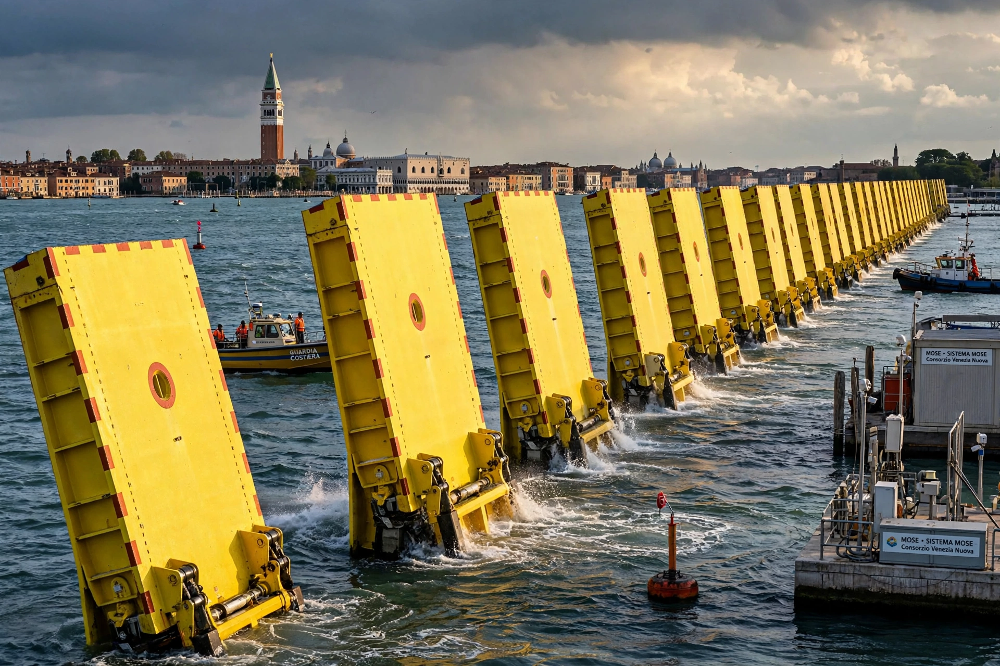

| Location | Venetian Lagoon inlets: Lido, Malamocco, Chioggia, Italy |
|---|---|
| Purpose | Flood protection for Venice |
| First operated | 3 October 2020 |
| Cost | Over €6 billion |
MOSE (Italian: Modulo Sperimentale Elettromeccanico, Experimental Electromechanical Module) is a system of mobile flood barriers designed to protect Venice and the Venetian Lagoon from high tides (acqua alta) of up to 3 metres.
Seventy-eight hinged steel gates lie in housings on the seabed at the three lagoon inlets. When a tide above 110 cm is forecast, compressed air empties the gates of water, causing them to rise and temporarily isolate the lagoon from the Adriatic Sea.
Conceived after the catastrophic 1966 flood, the project was approved in 2003, plagued by delays, cost overruns and a 2014 corruption scandal. It was raised successfully for the first time on 3 October 2020, protecting Venice from a 135 cm tide, and has been deployed many times since. Critics question its cost, maintenance and adequacy against sea-level rise.